서로의 시간을,
하나의 약속으로.
합류점에서 태어난 새 얼굴, 마주. 시간과 장소를 조율하고 마지막 확정까지 함께하는 모여락의 두 번째 브랜드입니다.
하나의 합류점, 두 가지 바탕



색의 역할
브랜드 홍시
#F45B3F행동의 숲
#176B5B마주의 신호
#F3CF58잉크
#202923밝은 바탕
#F6F7F2밤 바탕
#17251F마주가 말할 때는 노란색, 사용자가 결정할 때는 짙은 녹색을 씁니다. 실제 대비값과 다크 토큰은 BRAND.md에 있습니다.
마주의 여섯 표정 / 낮

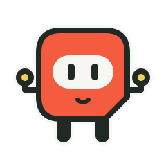

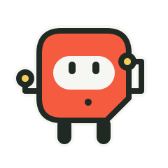

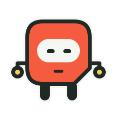

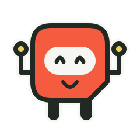

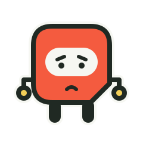

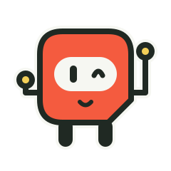
얼굴 전용 / 32px 실제 크기


마주의 여섯 표정 / 밤
얼굴 전용 / 32px 실제 크기
쓰임에 맞춘 얼굴


마주가 화면에 들어오면


말과 상태

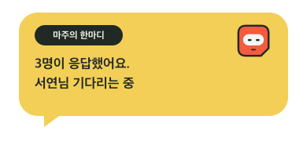


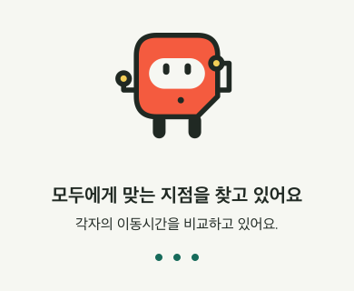

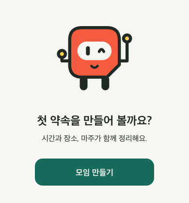

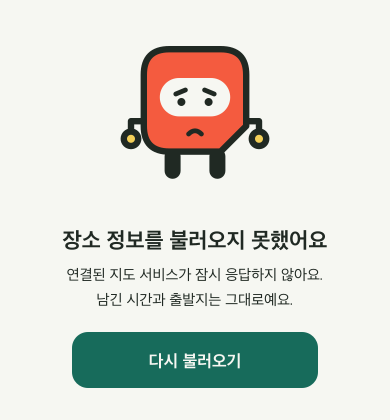
단톡방으로 돌아가는 약속
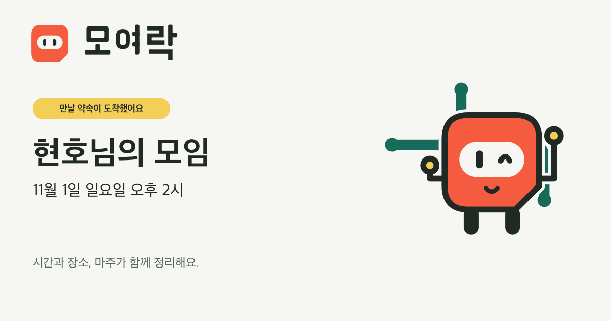


탐색한 세 가지 출발점


제작 규칙과 로고 원본

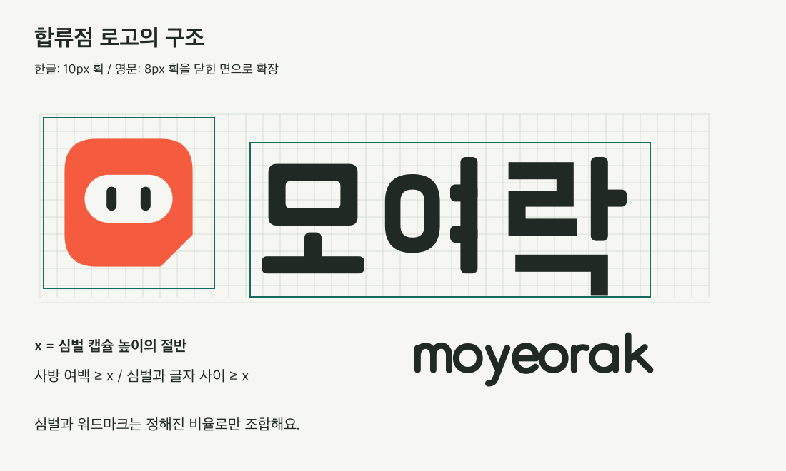

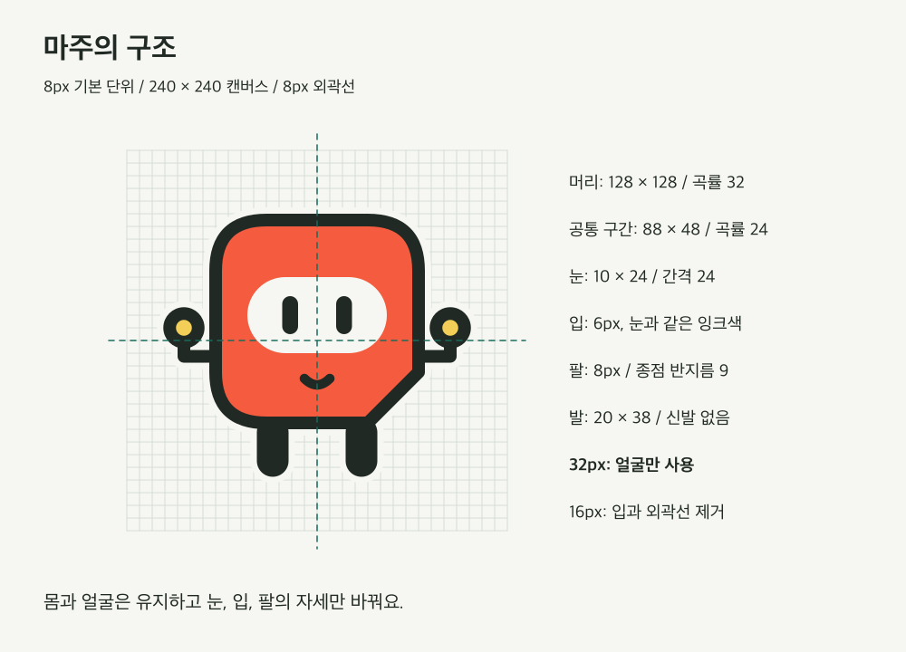